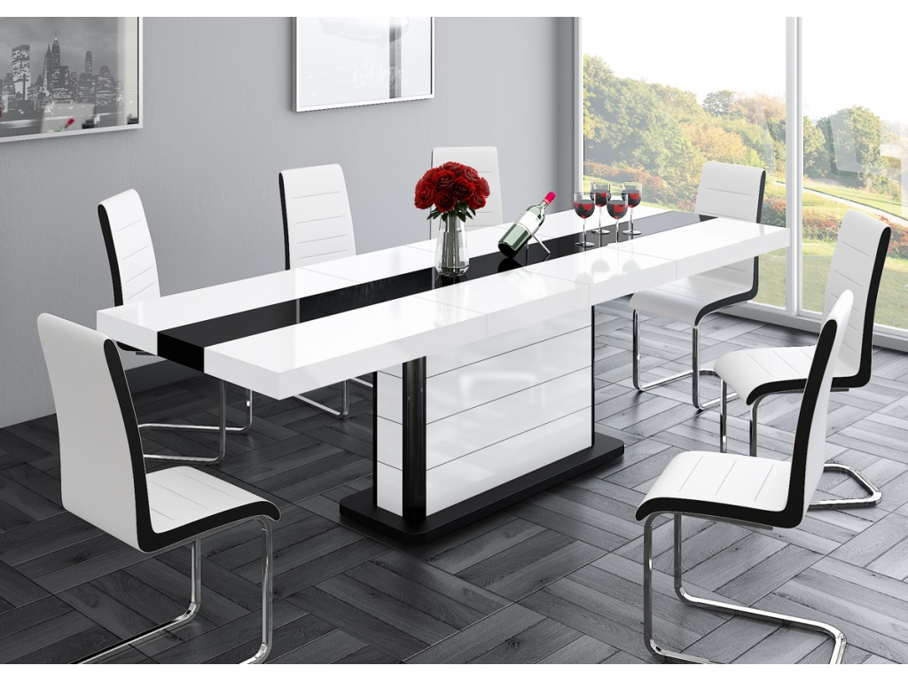

 Uždaryti (0)
Prekė pridėta mėgstamos prekės
Reikia pasirinkti mažiausiai vieną prekę
Lithuania Lietuvių English Pусский Lietuvių IKEA Family IKEA verslui Restoranas Darbas IKEA‘oje Kaip mus rasti? IKEA Family e. kortelė Prisijungti arba registruotis Prekės Šventiniai papuošimai Žvakės Sezoninis apšvietimas Žurnaliniai staliukai Korpusinės spintelės Knygų spintos Atviros lentynos TV stalai ir spintelės Spintų sistemos Atskiros spintos Komodos Čiužiniai Kušetės Virtuvinės vidinės detalės Vaikų kambario spintos Žaislai mažiems vaikams Lemputės Baterijos Paklodės ir pagalvių užvalkalai Antklodžių užvalkalai Antklodės Pagalvės Rankšluosčiai Užuolaidos Kilimai Durų kilimėliai ir priedai Puodai ir keptuvės Keptuvės ir gilios keptuvės Stalo indai ir serviravimas Stiklinės ir taurės Puodukai Rėmai Lauko stalai Sieninės lentos Daiktadėžės Dėžės ir krepšiai Vonios kambario šviestuvaiPopuliariausieji
Prekės išsinešti Kaune Prekės išsinešti Klaipėdoje Išmanusis apšvietimas Visos prekės Kambariai Svetainė Valgomasis Virtuvė Miegamasis Vonia Vaikų IKEA Namų biuras Prieškambaris IKEA verslui Maisto prekės Interjero detalės Kalėdos Idėjos Naujienos Kalėdinės prekės Žemesnė kaina (0)Prekė pridėta mėgstamos prekės
Reikia pasirinkti mažiausiai vieną prekę
Pagrindinis PrekėsRezultatų nerasta
Sekite mus
Naudingos nuorodos
Apie IKEA Katalogas ir brošiūros IKEA paslaugos Planavimo programos Pirkėjo gidai Darbas IKEA oje Kontaktai Atšaukti produktai Pirkimo–pardavimo taisyklės DUK© Inter IKEA Systems B.V. 2020
Privatumo politika Bendrosios naudojimo sąlygos Slapukų politika ×Uždaryti
Atšaukti Pašalinti adresą